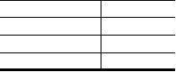

|

类、异类事件的相关性分析、以及预测未来一段时间
内同地区发生类似事件的可能性。该方法基于可公开
获取的互联网媒体数据（包括传统新闻媒体和微博），
主要包括四个步骤：数据清洗和补充、独立事件识别
和事件类型标记、事件相关性分析、以及事件未来发
生的概率预测。由于互联网数据的非结构化特性以及
危害公共安全事件的离散性，该方法需要克服来自以
下三个方面的挑战：
1)
异构的互联网数据对识别独立事件带来的挑战。
互联网媒体数据种类多样，没有同意的结构化标
识。一个事件发生后，可能会被多种类型、多家媒
体报导，不同语境下采用的用词方式（即语义）不
尽相同；同时事件报道的时间跨度不一，短则几
天，长则数月，这些因素对独立事件的识别（即将
多条不同但针对统一事件的报道进行分类）以及
同类事件的标识（即将同性质的不同事件进行分
类，如公交爆炸事件）带来了极大的影响。
2)
离散的独立事件对分析事件传播规律带来的挑
战。事件的发生原因多种多样，有的事件可能是
事件发起人受到媒体传播的类似事件的影响而引
发，有的事件可能预谋已久。如何发现事件之间
的关联，找到影响这些事件发生的因素，进而对
今后未发生的事件进行预测，具有很大的挑战。
3)
高维度的事件特征对预测事件发生概率带来的挑
战。由于公共安全事件背后的诱因复杂，有些事
件是有组织有预谋的，有些事件是潜在因素诱发
的随机事件；此外，同类事件在不同地区的诱发
因素可能完全不同。针对这些不同的因素，需要
通过不同的特征来量化表示，这样形成的高维度
特征向量给预测算法的设计带来了很大的挑战。
针对挑战一，本文采用基于语义的事件提取和基
于开放数据(Open Data)的事件标注方法。首先对原始
新闻和微博数据进行预处理，包括数据清洗、修正、融
合，然后把基于语义的事件提取算法与基于开放数据
的事件标注相结合，完成对独立事件的识别。在基于
语义的事件提取算法中，通过TF-IDF (Term Frequency-
Inverse Document Frequency)
对单条新闻报道或微博的
关键字进行提取，然后利用关键字序列的（余弦）相
似度对同类事件进行聚类。另一方面，我们搭建了基
于CKAN[?
]的开放数据平台，以微信公众号的形式向
公众开放，通过众包的方式对新闻进行人工标注，并
利用人工标注的结果对事件提取算法进行修正。之
针对挑战二，我们从三个维度（时间、空间、语
义）出发，采用可视化和相关性分析方法，对同类事
件的相互触发关系、异类事件间的相似性进行量化研
究。给定地区事件、给定事件类型发生数目的时间序
列，通过计算相关性度量最大信息量相关系数(MIC) [?
],
我们找到了同类事件相互触发的显著时间间隔，如
在95%的显著水平上，公交车爆炸事件复发的时间间
隔是15天左右，而校园砍杀事件复发的时间间隔是5天
左右。
针对挑战三，我们通过特征降维的方法，提取对
不同类事件的重要特征子集，然后通过局部时间、空
间、语义分析与全局时空分析相结合对未来发生的公
共事件进行了预测。交叉验证的实验结果表明，我们
提出的方法能够揭示在不同时空尺度下事件发生的内
在联系，对多类事件在未来1～3个月内发生次数的预
测准确度达到65%∼82%，充分展示了该方法在以预防
为主的新型公共安全事件管理中的重要意义。
在下文当中，我们首先介绍本研究的数据集和事
件提取算法；然后介绍同类事件和异类事件内的相关
性分析和可视化结果；最后介绍事件预测算法和交叉
实验结果。
2
数据集与预处理
2.1
数据集介绍
针对本课题，我们有3个核心数据集合（如表??所
示）。分别是新闻和微博数据集、新闻传播信息数据
集、微博用户资料数据集。
1)
新闻和微博数据集：主要包含每条新闻的信息。包
括新闻的唯一标识ID、新闻发布时间、新闻标题、
新闻导语、新闻正文、发布媒体等。
2)
新闻传播信息数据集：数据集(1)中某条新闻在互
联网上的传播情况。包括新闻的来源、评论数、转
发数、点赞数。
3)
微博用户资料数据集：数据集(1)中微博用户的个
人资料。包括用户所在地、出生日期、注册时间、
关注数、粉丝数、状态数、活跃天数、等级数等。
表
1:
数据集概览
数据集
记录数
新闻和微博数据集
540205(54万)
新闻传播信息
257550(25万)
微博用户资料
243365(24万)
2.2
数据预处理
原始数据存在一些问题，主要有三点：存在重复
记录、信息不完整、事件类型标注不准确。这些重复
数据、杂质数据对后续的事件提取、特征提取、关联
分析、预测、等工作造成很大影响，因此数据预处理
工作十分重要，直接关系到后续处理，对结果的好坏
具有很大影响。预处理工作分为数据去重、信息完整
化、事件类型标签修正三步。
(1)数据去重
在新闻传播信息、微博用户资料数据集中，存在
多条重复数据。我们对这两个数据集进行了去重处理，
对于多条完全相同的记录，只保留一条；而对于多条
差别很小的记录，仅保留最后更新的一条记录，删除
其他记录。
(2)信息完整化
公共事件的发生有很多影响因素，比如某公共事
件发生于哪个节日，发生地的经济发展状况、人口数
等。这些因素对事件的传播触发、规则关联分析，以及
事件是否发生及发生频次预测具有重要的意义。然而，
原始数据集中并没有这些特征信息，这回对事件关联
分析、事件预测的准确度产生很大的影响。因此，我
们采用多源数据融合的方法，把已有数据完整化。我
们通过互联网、公共数据库以及一些开放数据平台采
|